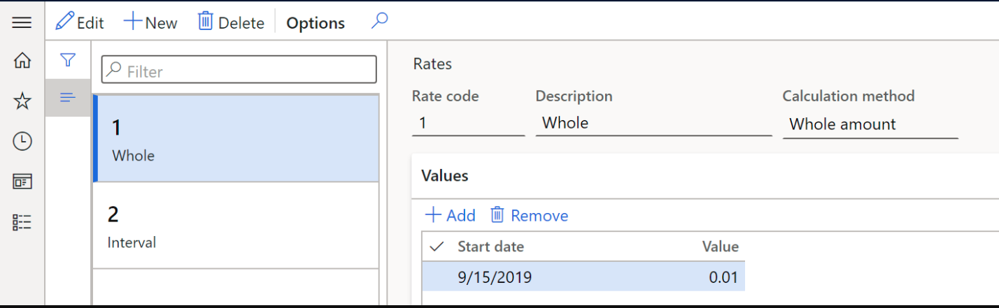
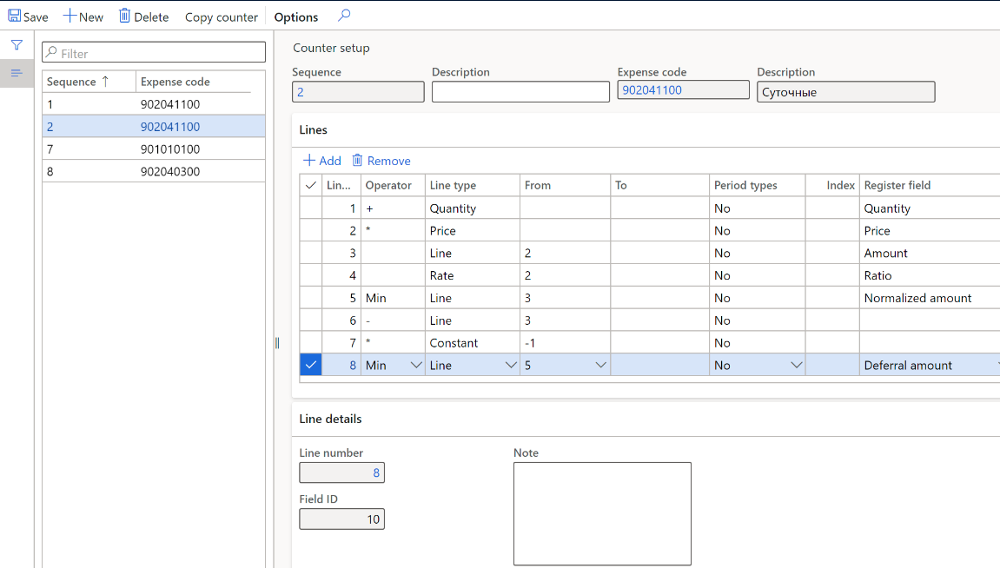
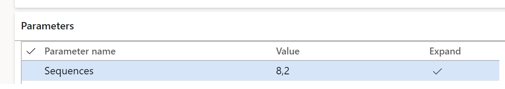
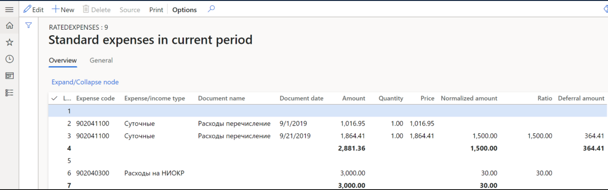

Rated expenses registers
Overview
Some types of expenses are reported differently in accounting and tax accounting. These expenses include rated expenses, of which only a part within the established standard is accepted for tax accounting in the current period. The remaining part can be accepted for tax accounting in subsequent tax periods. In accounting, these expenses are considered at the same time.
Set up
Create sequences of calculation and counters
For all types of rated expenses, you need to create sequences of calculation that consist of counters. If the standard for an expense is determined per unit, for example daily travel expenses, the document must specify the number of rated units (in this case, days) and their prices for correct calculation.
Create rates
Various constants or rates, such as tax rates, can be used as parameters to calculate register lines. Instead of storing rates directly in the calculation algorithm, these parameters can be stored in a special rates directory.
When used in counters, rates must be pre-configured. To set up rates, complete the following steps.
Go to Tax > Setup > Profit Tax > Rates.
On the Action Pane, select New.
In the Rate code field, enter the unique code of the rate.
In the Calculation method field, select one of the following:
- Whole amount: Determine the percentage of the expenses eligible for tax accounting in the current period.
- Interval: Determine the amount limit for tax accounting in the current period.
If you selected Whole amount, on the Values FastTab, do the following:
In the Start date field, enter the date from which the value of the rate will be used in the sequence of calculation.
In the Value field, enter the ratio value that will be used in the sequence of calculation.

If you selected Interval, on the Values FastTab, do the following:
- In the Start date field, enter the date from which the value of the rate will be used in the sequence of calculation
- In the Criterion type field, select the rate calculation criteria type, Minimum or Maximum.
On the Intervals FastTab:
- In the Value field, enter the lower limit of the transaction amount from which the rate will be applied.
- In the For amount field, enter the amount to be accounted for in this period.
Create and set up the sequence of calculation
The sequence of calculation contains counters that implement several arithmetic and logical operations on strings of certain types for a specified period. For more information about how to set up sequence of calculation, see Set up deferrals (Russia).
Complete the following steps to create a sequence of calculation for rated expenses.
Create and set up the tax register Standard expenses in current period as described in Profit tax registers journal topic.
Create expense codes for normalization. For more information, see Expense and income codes.
Go to Tax > Setup > Profit Tax > Sequence of calculation.
On the Action Pane, select New to create a new sequence.
In the Channel field, specify the register type.
In the Channel reference field, specify the register code for the rated expenses you created in step 1.
On the Action Pane, select Counters.
On the Counter setup page, on the Action Pane, select New.
On the Lines FastTab, select Add and specify values in the Operator, Line Type, From, To, Period Types, and Index columns.
In the Register field column, select a value to determine the column of tax register to which the line value should be output:
- Amount: The total amount of the expense.
- Quantity: The number of rated units. This value comes from the corresponding field in the source document.
- Price: The amount per unit. This value comes from the corresponding field in the source document.
- Normalized amount: The rated amount of the expense.
- Ratio: The calculated amount using the ratio for the expense code from the sequences of calculation.
- Deferral amount: The difference between the total amount and normalized amount accounted for in the expenses of the future period.

Assign calculation sequences to the register
Go to Tax > Setup > Profit Tax > Registers.
Select the Standard expenses in current period tax register from the list.
On the Parameters FastTab, in the Value column, choose the numbers of the calculation sequences to form the register from the list.

Standard expenses in current period register
Calculate the tax register as described in Profit tax registers journal.
The Standard expenses in current period register reflects information about the expenses of the current period, their rated part, and the part that exceeds the standard.

View the following information on the register lines:
- Line number
- Expense code: Expense code from the sequences of calculation
- Expense/income type: Description of the expense code
- Document name: Description of the document
- Document date: Transaction date
These fields are the result of calculating the respective sequence of calculation: Amount, Quantity, Price, Normalized amount, Ratio, and Deferral amount.